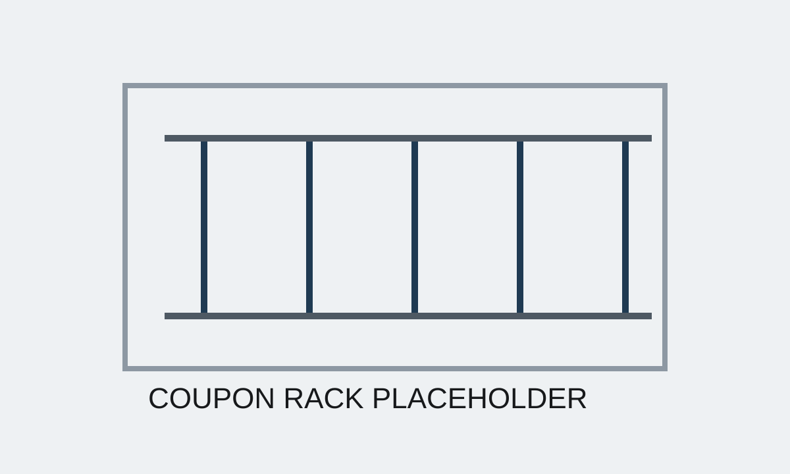
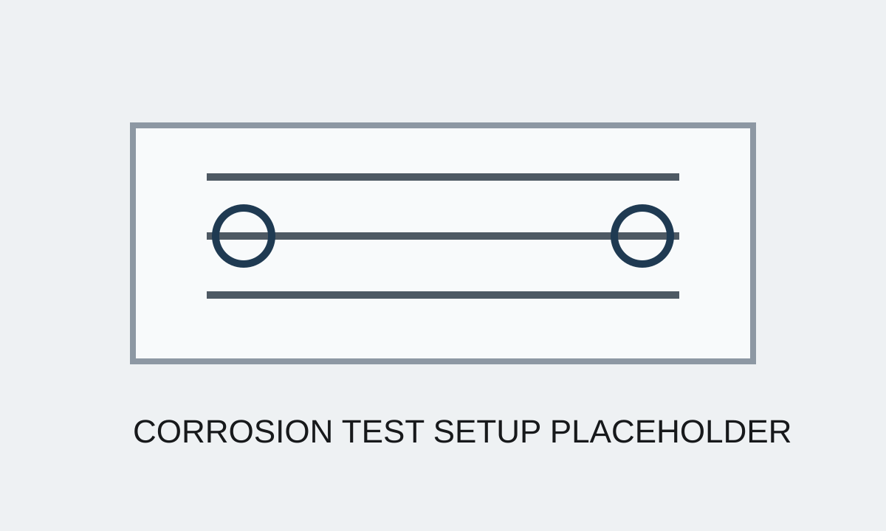
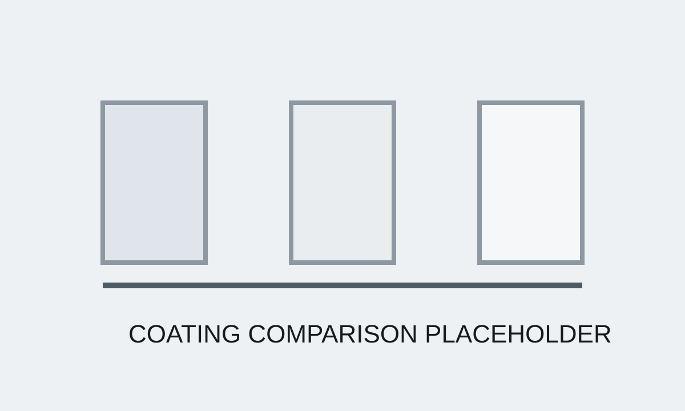

Case Study 04
Corrosion & Coating Validation
Built and executed a corrosion and coating validation program for marine hardware, including saltwater cycling and galvanic testing, to evaluate durable production-ready coating systems.
Short Summary
Marine durability represented a significant product risk. The work created a structured validation path to compare candidate coating systems using practical tests that informed both engineering and production decisions.
The Problem
Coating and corrosion performance could not be treated as a cosmetic issue. The system needed a repeatable way to compare durability, galvanic behavior, and implementation feasibility before committing to production-ready solutions.
Constraints
- Marine exposure created a severe durability environment
- Candidate systems had to be compared on durability, cost, and manufacturability
- Testing needed to reflect practical production decisions, not just lab idealization
- Vendor coordination and coupon preparation had to fit normal development timelines
My Approach
- Designed a validation plan covering coupon builds, wet-dry cycling, and galvanic testing
- Coordinated with vendors on candidate systems and sample preparation
- Executed structured comparison testing across coating options
- Framed results around production readiness rather than isolated test outcomes
What I Built
- A practical corrosion and coating validation framework for marine hardware
- Coupon-based test articles and repeatable evaluation criteria
- A decision-making structure linking technical performance to cost and manufacturing
Results
- Created a structured program for selecting production-ready coating systems
- Improved visibility into durability and galvanic tradeoffs
- Reduced ambiguity in a high-risk marine reliability area
What Went Wrong / Iterations
Coating comparisons can look straightforward until manufacturing realities and mixed-metal interfaces are included. The main iteration was in refining test conditions and evaluation criteria so the results stayed useful for real product decisions.
What I'd Do Next
The next step would be continued long-duration exposure tracking on leading candidates and tighter integration between validation results, vendor process capability, and final part release criteria.
Images



Confidentiality Note
Details and visuals have been simplified to respect confidentiality while preserving the technical approach.